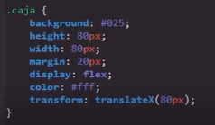
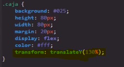
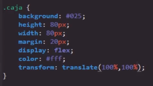
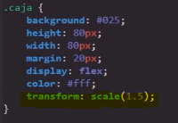
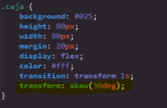
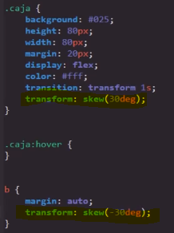
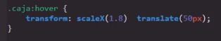
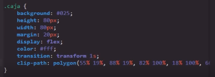

Propiedad Transform
La función de esta propiedad es la de transformar el elemento en el que esta se aplique, lo cual esta propiedad puede hacerlo de varias maneras:
Desplazando el elemento: Ya sea vertical o horizontalmente con el uso de las propiedades.
Escalando el elemento: Ya sea haciéndolo más grande o más chico.
Cambiando la forma del elemento: Añadiéndole grados de inclinación.
Nota: La propiedad transform con el valor Translate es la mejor forma de hacer las animaciones y transiciones, ya que es la propiedad que menos cantidad de recursos consume, ya que únicamente desplaza al elemento de la animación a una nueva capa y lo modifica.
Valores
TranslateX
-
Este valor indica que el elemento deberá desplazarse horizontalmente. Para el funcionamiento de este valor también debe incluirse la distancia que el elemento se desplazará, para lo cual se incluye la cantidad en medidas dentro de paréntesis.

Nota: Si se da el caso de que se defina 100% como cantidad de desplazamiento, el elemento se desplazará una distancia igual al tamaño de este; es decir, si el elemento mide 100px el desplazamiento horizontal será de 100px.
Nota: Los valores positivos en esta propiedad trasladan el elemento hacia la derecha y los negativos hacia la izquierda.
TranslateY
-
Este valor indica que el elemento deberá desplazarse verticalmente. Para el funcionamiento de este valor también debe incluirse la distancia que el elemento se desplazará, para lo cual se incluye la cantidad en medidas dentro de paréntesis.

Nota: Si se da el caso de que se defina 100% como cantidad de desplazamiento, el elemento se desplazará una distancia igual al tamaño de este; es decir, si el elemento mide 100px el desplazamiento vertical será de 100px.
Nota: Los valores positivos en esta propiedad trasladan el elemento hacia abajo mientras que los negativos lo hacen hacia arriba.
Translate
-
Se trata de la propiedad de abreviatura de translateX y translateY. Su función es simplemente realizar el mismo efecto que estas propiedades en una sola declaración, por lo que el fin de esta propiedad es simplificar y optimizar el código CSS. Esta propiedad recibe dos datos, cada uno referente a cada eje.
Ejemplo

Scale
-
Este valor permite aumentar el tamaño de un elemento X número de veces. Para hacerlo, esta propiedad multiplica las dimensiones del elemento por un valor numérico definido en la propiedad dentro de un paréntesis; es decir, el elemento se puede multiplicar por el número que se desee, volviéndose tan grande como se plazca. También es posible reducir su tamaño multiplicando las dimensiones del elemento por números menores a 1, como por ejemplo "0.5".

Esta propiedad cuenta con diversas variantes que seccionan la funcionalidad de scale, estas propiedades son:
-
ScaleX: Esta propiedad aumenta el tamaño del elemento únicamente en el eje X.
ScaleY: Esta propiedad aumenta el tamaño del elemento únicamente en el eje Y.
ScaleZ: Este valor no se aborda en el curso por su complejidad.
Scale3D: Este valor no se aborda en el curso por su complejidad.
Nota: Esta propiedad convierte los elementos en imágenes vectorizadas con el fin de que no se pierda calidad a la hora de agrandarlos.
Skew
-
Este valor permite modificar la forma de los elementos añadiéndole X cantidad de grados de inclinación a estos. Ya que esta propiedad trabaja en base a grados, únicamente acepta las siguientes medidas como sus valores: deg (grados), rad (radianes) y grad (gradianes). Entre todas estas medidas, la más recomendable así como la más utilizada son los grados.
Código

Resultado
Como se puede ver en el ejemplo, al aplicar esta propiedad en el contenedor, su efecto también influye en el contenido de este. Para contrarrestar esto, la solución es aplicar una segunda propiedad skew al elemento hijo, pero con un valor inverso, para que de este modo ambas propiedades se contrarresten y resulte en un contenedor inclinado pero un contenido sin ningún tipo de inclinación.
Código

Resultado
Nota: Todas estas propiedades, al fin y al cabo, son valores de la propiedad "transform", por lo que se pueden aplicar a la vez desde un único llamado de esta, esto con el fin de poder aplicar más de un efecto a la vez para obtener la mayor cantidad de posibilidades a la hora de crear un efecto.

Nota: Es útil tener en cuenta que al utilizar la propiedad "transform" en un evento, esta será sobreescrita, así que es necesario repetir cualquier valor que se desee conservar.
Realmente la propiedad transform es inmensa, con un gran número de posibles valores; en este apartado tan solo se tocaron los valores básicos, sin embargo existen muchas más posibilidades. Todas estas están definidas en este enlace, en caso de que se necesite o desee indagar más.
Propiedad Clip-path: polygon;
Como tal, esta es una propiedad completamente independiente de transform; sin embargo, al igual que esta, permite transformar un elemento al cambiar la forma de este. Debido a la gran relación en su efecto, se hace referencia a esta propiedad en este apartado.
La propiedad Clip-path junto con el valor polygon permite modificar la forma de los elementos a placer. Sin embargo, para generar las formas se necesitan ingresar múltiples tipos de datos, razón por la cual simplemente se suele utilizar un generador de Clip-path como el que se encuentra en este enlace.
Código

Resultado